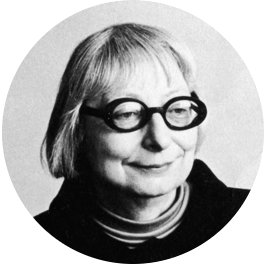

DIGRESSÃO DA COMPLEXIDADE MORFOLÓGICA
O paradoxo dos índices urbanísticos na ZEUOrientador: Prof. Leonardo Loyolla
http://bit.ly/complexidademorfologica
#sumário
#introdução {2 capítulos}
#justificativa {2 capítulos}
#objetivo
#método
#resultados
#considerações_finais
#referências, #apendices, #anexos, ...
#introdução {Que tipo de problema é a cidade?}
- título do último capítulo de "Morte e vida das Grandes Cidades"
- do fim pro começo
- "Esse livro é um ataque ..." (JACOBS, 1961, p. 1)
- Dr. Weaver e os 3 tipos de ciências
- Parte 2, 100 páginas diversidade
“Como as ciências biológicas, as cidades são problemas de complexidade organizada.”
(JACOBS, 1961, p. 482))
#introdução {Que tipo de problema é a cidade?}
A cidade não é uma árvore. Não no sentido literal de galhos e folhas, mas no sentido abstrato de estrutura (ALEXANDER, 1961)
- arquiteto, urbanista e matemático austríaco
- 4.000 páginas de textos publicados, além dos 13 livros escritos durante décadas de pesquisa
- ementas das matérias dos cursos de arquitetura no Brasil?
- "Uma linguagem de padrões"
 Diagrama produzido pelo próprio autor, referênciando a clássica comparação de Alexander (1961)
Diagrama produzido pelo próprio autor, referênciando a clássica comparação de Alexander (1961)
#introdução {complex(c)idade}
 “Complexidade é um tecido (complexus: o que é tecido junto) de constituintes heterogêneas inseparavelmente associadas: ela coloca o paradoxo do uno e do múltiplo.”
(MORIN, 2015, p. 13)
“Complexidade é um tecido (complexus: o que é tecido junto) de constituintes heterogêneas inseparavelmente associadas: ela coloca o paradoxo do uno e do múltiplo.”
(MORIN, 2015, p. 13)
{sinergia}, {diversidade}, {antideterminismo}, {centralidade e inteireza}, {multidimensionalidade}
#justificativa {O paradoxo}
quase 60 anos se passaram ...
PMSP {CA, TO, recuo, taxa de permeabilidade, gabarito ....}
praticamente ignoram, a insolação, ventilação, hidrografia, vizinhança ....
cumpre a função por ser simples, mas e a complexidade?
** cada 12º significa 50 minutos de visada azimutal
#justificativa {Ordem e progresso, higiene e interesses}
fonte: produzido pelo autor com base na legislação da PMSP e potencial construtivo CA 4 em apenas uma torre com o mínimo gabarito necessário.
“a legislação urbana atua como linha demarcatória, estabelecendo fronteiras de poder” (ROLNIK, 1999, p. 1)
Positivismo, Higienismo, Recuos desde 1894 ...
privatização do térreo livre
isonomia?
hipótese: ciclo do remembramento, demolição e construção
#objetivo {Diversidade, cade você?}
O objetivo desse trabalho portanto, é estudar morfologia urbana sob o ponto de vista da complexidade da cidade; investigando possíveis digressões decorrentes da aplicação dos índices urbanísticos e restrições construtivas da legislação vigente na Cidade de São Paulo
Diversidade {identificar, classificar, mapear, quantificar e analisar}
por meio de {algorítimo, cartografia, 'big-data', modelos matemáticos e dendogramas}
gerar sbsídio {arquitetos, urbanistas, administradores, legisladores ...}
afim de {tomada de decisão racional, científica e atemporal}
Estimular novas discussões sobre a diversidade
#método {Taxonomia numérica co-fenética}
fonte: produzido pelo autor
"... como as ciências biológicas ..." (JACOBS, 1961)
Multidimensionalidade {Área, CA, TO, gabarito, empenas ...} (17 dimensões)
Matriz de distância --> proximidade --> roda de novo --> ...
#resultados {A morfologia da Vila Mariana}
fonte: produzido pelo autor com dados do Geosampa

#resultados {A morfologia da Vila Mariana}
#considerações finais {Praxis}
“não há revolução com verbalismo, nem tampouco com ativismo, mas com práxis, portanto, com reflexão e ação incidindo sobre as estruturas a serem transformadas” (FREIRE, 1987, p.122)
possibilidades de rumo da pesquisa {quantificação de sombreamente por grupo, sky view factor, quantificar a vitalidade urbana com "hasdorff" ... }
possibilidades de apendices {96 distritos}
possibilidades de práticas (práxis) {ação civil pública, advocacy, academia, CAU}
possibilidades teoricas {arquitetura pode ser ciência por definição?, fractalidade ....}
...
#obrigado {@feromes}